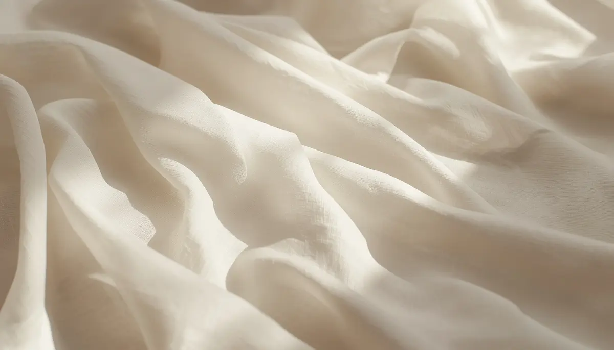

¿Qué es la dermatitis atópica y cómo actúa?
Cuando nos adentramos en el cuidado de la piel sensible en la infancia, resulta fundamental comprender qué ocurre a nivel microscópico en el organismo. La dermatitis atópica no es simplemente una sequedad pasajera, sino una alteración crónica de la función barrera de la piel que modifica por completo su forma de interactuar con el entorno exterior.
La alteración de la barrera cutánea y la pérdida de humedad
En una piel sin atopia, las células superficiales se mantienen unidas mediante lípidos naturales que actúan como un escudo protector, reteniendo la hidratación en el interior y bloqueando la entrada de alérgenos, irritantes y bacterias. En el caso de la dermatitis atópica, este cemento lipídico es más escaso o frágil. Como resultado, la humedad se evapora con gran rapidez y la piel queda desprotegida frente a agresiones externas.
"Comprender que el picor y la rojez son una consecuencia directa de una barrera cutánea debilitada nos ayuda a enfocar los cuidados desde la protección y la hidratación constante."
El ciclo inflamatorio y los factores desencadenantes
Esta vulnerabilidad facilita que diversos factores desencadenantes —como los cambios bruscos de temperatura, el sudor, los tejidos ásperos o ciertos jabones agresivos—penetren con facilidad y disparen una respuesta inflamatoria. Esta reacción provoca el característico picor intenso que, al dar lugar al rascado, daña aún más la superficie cutánea y alimenta un persistente ciclo de irritación.
Conocer la piel para protegerla con eficacia
Entender la naturaleza de la piel atópica nos permite dejar de ver los brotes como un misterio imprevisible. Sabiendo cómo responde la barrera cutánea, podemos anticiparnos con emolientes adecuados y hábitos respetuosos que devuelven el equilibrio al bienestar del menor.
➔ Volver al índice de Dermatitis atópica